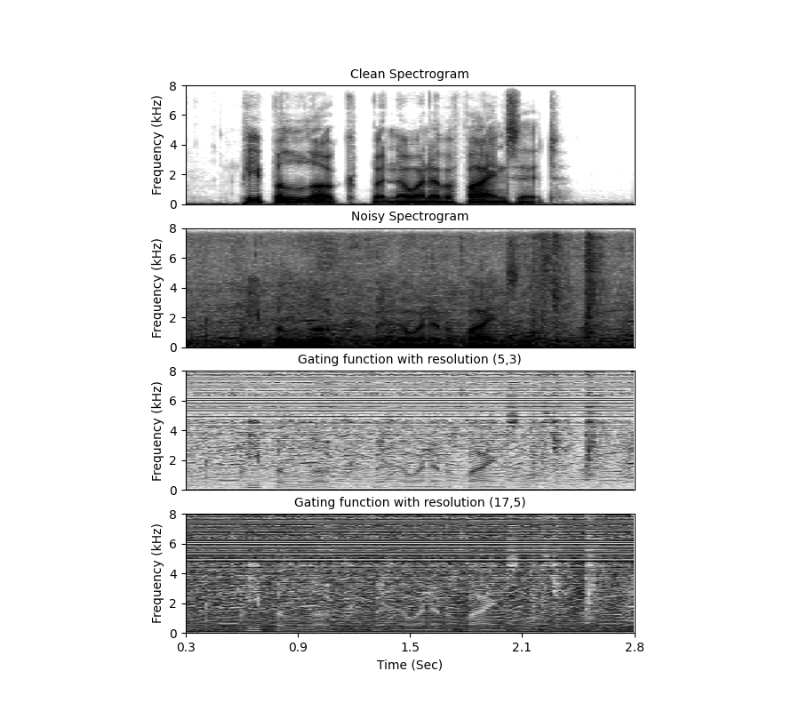
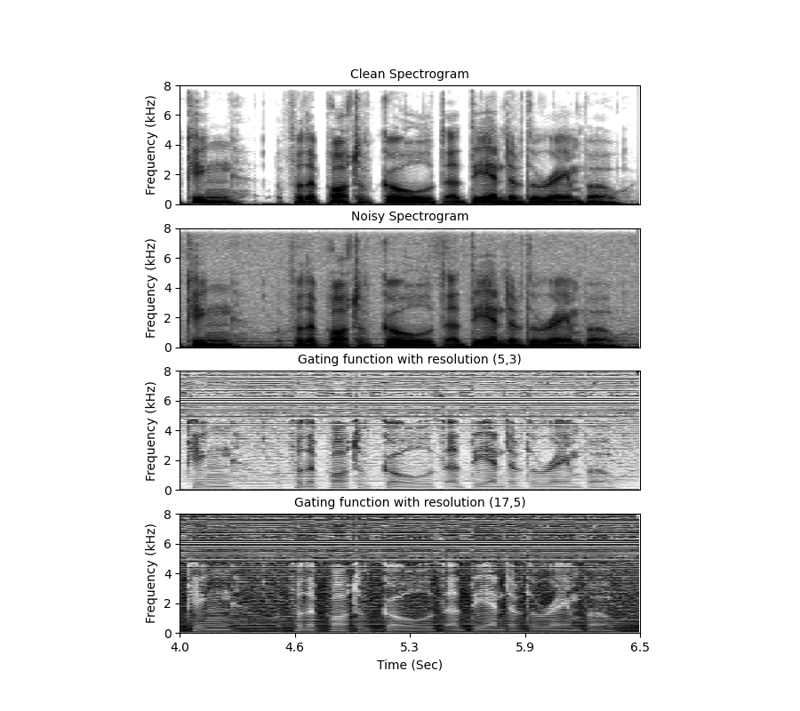

Time-Varying Multi-Resolution Filtering for Speech Enhancement
Venkatesh Parvathala, Sri Rama Murty Kodukula
With different noise types
left: Bus noise (relatively stationary)
right: Cafe noise (nonstationay)


At different SNRs
left: 2.5dB
right: 17.5dB

